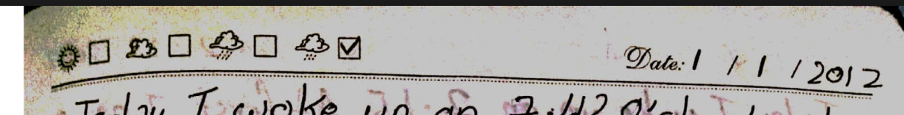
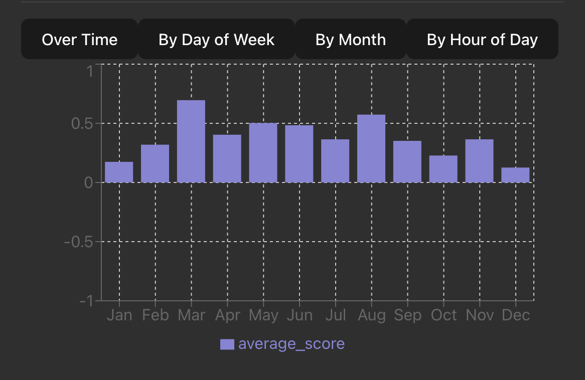

Tldr: I built a digital ghost of myself because wtf is wrong with me.
Github Repo: bvrvl/Smriti.
I started journaling a few months before I turned 10 and have been fairly consistent since. It is one of the very few habits that I took up early and haven't given up yet.
My oldest surviving journal entry is from Jan 1, 2012, the content of which I am not brave enough to share here.
What does journaling do for me?
It's hard to say. I began because as a child, I was terrified of forgetting. I had this desire to remember every single thing that happened in my world -- both external and internal. I’d spend parts of school planning what to write that night; sometimes the plan became longer than the entry. I don't think that my motivation to journal is still the same. I do want to remember but now I am more attached to the habit itself. But again, it's hard to say.
I turned 18 during Covid. It had already been 2 years since I left home. When you live alone, you don't fear people going through your belongings once you lock the door. It's different at home. The fear speaks to you every second of your waking life. So was the case for me when I returned home to ride out the pandemic. After a year of this fear, I decided to scan all the journals I had ever kept, turn them into pdfs, and burn the hard copies. It felt like witchcraft (in a good way, weirdly consoling).
After a small detour to the cryptic world which was extremely hard to keep up with, all the journal entries I have made since August 2021 have been digital. From then to when I am writing this post, I have made over 500 entries digitally.
A couple of weeks ago, I had just enough time to go through what l had written until then. It was good to re-remember. However, at some point, the records stopped being nostalgia and started to feel like archaeology.
There's this episode of Black Mirror called The Entire History of You, where a chip implanted in your brain records everything you see, hear, or do, and lets you rewind and relive those moments again. There's another episode of Black Mirror called Be Right Back, where a dead man is resurrected from the digital traces he left behind. His form is initially digital but he is ultimately given a body.
These two stories flashed before me because I knew that without meaning to, I had created something similar. A memory archive. A knowledge base of thought patterns.
So I decided to treat it that way.
I built a small app to mine this archive. I named it Smriti - Sanskrit for remembrance, memory, that which is remembered.
It does two things: visualizes long-term patterns, and gives me a conversational interface to “talk” to my past. You can check it out here.
The first thing I built was a sentiment heatmap (like GitHub’s contribution chart), but instead of commits, it shows the emotional tone of my journal entries. For this, I used NLTK's VADER sentiment analyzer on each entry.
Green = better days, red = rougher ones. The clustering is surprising. I can see streaks I forgot about. An interesting read: there are more green days than red ones. That's data I wouldn’t have trusted if it came from memory alone. But idk. Could be survivorship bias. I write mostly on the days I feel good? But maybe not. I would like to think I'm positive.
Top words
Of course it's "work". Not a revelation, but surprisingly honest.
Sentiment Fluctuation: grouped by weekday, hour, and month
I grouped journal entries by weekday and took their average sentiment. I know that it won't give me the why but it gives me a when and that's interesting enough.
Monday blues are real. It's not just a slight sentiment dip, it's :) vs :(. And the high on Fridays. Have I always been this predictable? The rest of the days are pretty consistent, indistinguishable from one another. Although I'm surprised that there isn't a big dip on Thursday.
I zoomed in further and broke down sentiment by the hour of the day.
And here's how I interpret the data: Mood gradually worsens after 7pm reaching the lowest at 4am. This isn't surprising. If I am journaling at 4am, it means that I haven't slept and it's most likely because of something that's bothering me. I also seem to be pretty positive at 5/6am. Perhaps it's the joy of waking up early in the face of what possibilities the day may bring with it. However, I do not understand the mood swings between 3pm and 9pm. I can't think of an anchor present at those times. It may simply be the general volatility with which I live my live. I'm working on that.
Then I zoomed out. Sentiment by the month of the year.
This is interesting. I've never thought of myself as someone who takes birthdays seriously but the high in March tells a different story. The data also confirms something I have suspected for a long time -- that a sudden optimism grows within me around August. It also reflects the downs that winter brings in me. I love when it is winter but I also know that I am not my best then.
Answering the why
The The Entire History of You part was done. Now I needed Be Right Back. I wanted to talk to my ghost. I had several options:
- Build a simple keyword matching engine, and add scaffolding around it. (Too Basic)
- Feed all of my journal entries into a smart, long context model like Gemini and talk to it. (nope; privacy was the whole point)
So I chose to:
- Run a Small Language Model (Gemma 3) locally on my own machine.
How the ghost works:
- Query Expansion: First, I use the model to rewrite my simple question into a richer set of search terms, making the search smarter.
- Semantic Search: I take the expanded query and use a sentence-transformer model (all-MiniLM-L6-v2) to find the most relevant journal entries from my database based on conceptual meaning.
- Grounded Generation: I feed these relevant entries to the Gemma 3 model as context, along with a carefully crafted prompt that instructs it to answer only based on the memories provided, and to think in a chain-of-thought process before giving a final answer.
Yes, my laptop got hot and loud and I thanked it like a dying pet.
This was the most uncanny, eerie part of it all. The ghost answers in ways that feel like me, and in ways that don’t. It can offer advice to my 2021 self or summarize my fears; it can’t create new experiences or actually be me. It’s a ghost that only wakes up when asked.
Here are some examples:
What do you fear the most?

What advice would you give to your 2021 self?
Write a journal entry for today.
This is where the illusion breaks, but in a poetic way. It shows the boundary of the system. It can breathe, but it can't live. It can remember, but it can’t recall now. It is ever-waiting for a question to give it a fleeting moment of awareness.
And that is a strange feeling.
Github Repo for Smriti